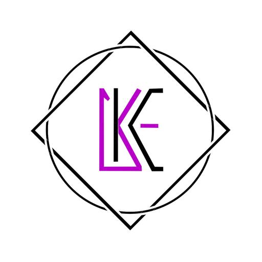
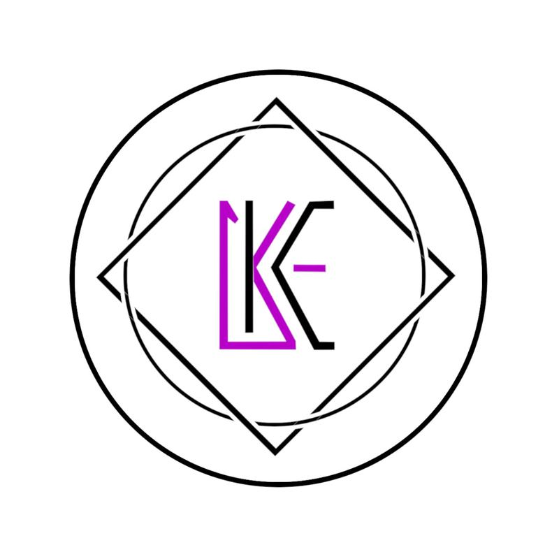
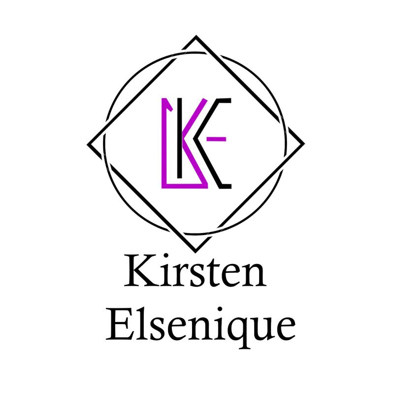
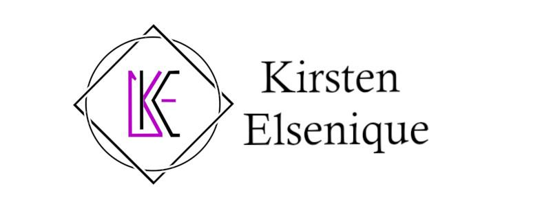

Back to Projects/projects/ KE Logo

KE Logo
August 31, 2026
Project Description
A personal brand mark built from my initials, combining a circle and a diamond frame with a bold purple and black monogram.
Project Info
Role: Graphic Designer
Type: Personal Branding
Technologies Used
GIMPGallery



Creator's Role
Designed a monogram that reflects my initials and my love for clean, geometric design, with versions for different layouts.